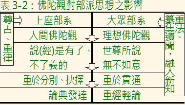

第三章 佛教僧團的分化

二、關於生死輪迴︰否定生命中有一個常恆、不變的主體，在流轉生死，是佛教教義上的一個重要特色，稱為「無我」，而成為佛教「三法印」之一的。佛陀肯定奧義書的「業感輪迴說」，但卻否定其「真心梵我論」。「真心梵我論」主張有一個真我，在造業、受報、輪迴生死，這與佛教「無我」的主張是不相容的。佛陀對於生命從死到生的描述，在漢譯《阿含經》中，有幾種不同的翻譯：最常用的是「識」（《中阿含九七經大因經》等，以及十二緣起支中的「識緣名色」），其他如「異陰相續」（《雜阿含三三五經—第一義空法經》）、「{與}（餘）陰相續生」（《雜阿含一０五經》）、「神識」（《雜阿含九三０經》、《增一阿含一六—九（一二八）經》、《增一阿含二六—一０（二三四）經》等）、「識神」（《雜阿含一二六五經》、《長阿含七經弊宿經》、《增一阿含二一—三（一七七）經》等）、「精神」或「神」（《長阿含一、七經》等）、「香陰」（《中阿含一五一、二０一經》）、「意生身」（《雜阿含九五七經》）等，而南傳《尼柯耶》中，與之相對應的經文，則只使用「識(viññāṇaṃ)」（《Ｓ二二‧八七—跋迦梨》、《Ｍ‧三八—渴愛的滅盡大經》）、「心(cittaṃ)」（《Ｓ五五‧二一—摩訶男》）、「乾達婆(gandhabbo)」（《Ｍ‧三八—渴愛的滅盡大經》）等。而《阿含經》中，對「識」、「神識」、「神」，乃至於「香陰」是什麼，並沒有進一步的描述，或許當時更注重的，是從死到生驅動力（集）的探討，以及如何止息這個驅動力的修行方法（道）吧！
三、一念見諦與次第見諦︰這是部派間，對修行次第的不同觀點。大眾部與分別說部系的部派，認為可以是「一念見諦」，直接由滅諦悟入而見法入涅槃的，類似所謂的「頓悟」。但是，說一切有部與犢子部系的部派，都認為四諦是有次第性的，應該是從苦、集、滅、道依次悟入而見法涅槃的，類似所謂的「漸修」。就像走階梯一樣，一階一階地走的（《雜阿含四三五、四三六、四三七經》）。一念見諦的看法，應該對日後大乘佛教，主張直接由涅槃（滅諦）著手的修行法，有所啟發吧！印順法師認為，一念見諦或次第見諦，是屬於修行體驗的範疇，不是從理論中推出來的，兩者因人而異，都有可能。不過個人認為，四諦具「次第特性」的說法，就道理的理解上，與修行方法的下手上，有可能比較容易被接受。不過，或許一分利根者，或一類瑜伽行者，有可能可以經驗到快速地通過苦諦與集諦，而在滅諦成就的。就一般的情況來說，直從滅諦成就，對一般的凡夫，有可能是比較難下手的。
第三節 部派思想大義
僧團經過三百多年的分化，一直到西元元年左右，佛教發展的主流逐漸轉入大乘佛教為止，有十八部或二十部之說。從論典（阿毘達磨）的發達，可以瞭解到各部派對佛法，有不同的詮釋與見解。這些不同的詮釋與見解，如果從印度佛教思想發展的軌跡來看，正是居於「上承阿含，下啟大乘」的樞紐地位，孕育往後「中觀」、「瑜伽」、「真常」等「大乘三系」思想的開展。各部派間不同的論點很多，如《成實論》說：
「於三藏中多諸異論，但人多喜起諍論者，所謂『二世有、二世無』，『一切有、一切無』，『中陰有、中陰無』，『四諦次第得、一時得』，『有退、無退』，『使與心相應、心不相應』，『心性本淨、性本不淨』，『已受報業或有、或無』，『佛在僧數、不在僧數』，『有人、無人』。」（《大正大藏經》三二‧二五三下）
為避免繁瑣，以下僅嘗試作原則性的歸納，選擇對以後發展，有重要影響的主要論題，列舉「佛陀觀」（有關部派風格的）、「生死輪迴」（有關說理分析的）、「修行次第」（有關修行經驗的）等三個主軸，作概略的介紹。
一、佛陀觀︰離開佛陀在人世間的時代愈遠，佛弟子對佛陀的懷念日深，「人間佛陀」的事實，也就可能愈模糊。屬於大眾部系的部派，對佛陀在人間成佛的看法，有了情感性的變化，認為偉大的佛陀，是來世間示現的，不是由一般人類成佛的。佛陀的身體、壽命、威力，都廣大無邊；佛陀的說法，每句話都能利益眾生，如「以一音演說法，眾生隨類各得解。」佛陀知一切法，回答問題「不待思惟」，常在定中（《異部宗輪論》，《大正大藏經》四九‧一五中、下）。這樣子的佛陀觀，讓人覺得佛陀已經不屬於「人間」的人了。從另一個角度來看，這樣的佛陀觀，是不是也會讓人懷疑，人類可以經由修行成佛？
而屬於上座部系的部派，大多仍然維持歷史上的人間佛陀觀。
從佛陀觀的不同，開展而來的，是對阿羅漢等聖弟子的成就看法不同。在《雜阿含七九七經》中，對修學佛法而有成就者，安立了四個階位︰
初果須陀洹：這是指斷身見、戒見取及疑等三結的聖者。
二果斯陀含：這是指斷三結，貪、瞋、癡薄的聖者。
三果阿那含：是斷五下分結（五下分結即三結與貪、瞋）的聖者。
四果阿羅漢：是貪、瞋、癡永盡，一切煩惱永盡的解脫聖者。
其中，《阿含經》將初果須陀洹描述為：
「不墮惡道，必定，正趣三菩提，七有天人往生，然後究竟苦邊。」（《雜阿含六一、六四四、六四八、三九六、八五四、九一七、九六四等經》）
這可以看作是解脫道上的一個重要標竿。「必定，正趣三菩提」，就是必定會在解脫道上，勇往直前，直到解脫，中途不會退墮的。
在大眾部系理想的佛陀觀下，佛陀的崇高偉大，是佛弟子所不可及的，即使是解脫的四果阿羅漢，也只是斷煩惱，而未斷「習氣」。所以，比起佛陀，還相去甚遠。這也與上座說一切有部等系認為阿羅漢與佛陀的差別，只在於佛陀的解脫，是自己悟得的，而阿羅漢是經由佛陀教導後，才自己悟得（《雜阿含七五、六八四經》）的觀念不同。而上座部系所認為不退轉的初果，大眾部系卻認為初果還是會退墮的，並且認為證初果的人，除了殺父、母、阿羅漢、破和合僧團、出佛身血等五種墮無間地獄的重罪不會犯外，還是會「造一切惡」的，這與原來須陀洹果的標準（定義）實在相去太遠了。
這些，想必與「貶抑聲聞聖者，而誇揚大乘菩薩」風潮的開展有關，對往後佛教中大乘與聲聞乘對立的不幸，有著深切而不良的影響。至於大乘佛教中，般若思想系統所說的「煩惱」與「習氣」，唯識思想系統所說的「煩惱障」與「所知障」，如來藏思想系統所說的「無明住地」，可能都是從阿羅漢不斷餘習的思想逐漸演化而來的。
從佛陀觀之不同，也有可能是上座部系重論，大眾部系重經的成因之一。試作下表說明：表3-2：佛陀觀對部派思想之影響
部派佛教時期，顯然將焦點擴張到生死輪迴、業報流轉過程的探討上，論究從死到生如何轉移，中間是否存在某種狀態？而這個狀態的性質又是如何？……等。這樣，多數的部派都不免涉入了探求一切法自性「有」、「無」的領域，而更接近形而上的論理推演了。這與佛陀以眾生身心的觀察，重於經驗而少哲學性探求的教說，恐怕是有些差異了。
一切法，並非漫無範圍，早期佛教是明確地指五蘊、六處及六界的（《雜阿含四二、二三一經》），或進一步將六根與六境合稱為十二處，將六根、六境與六識合稱為十八界，總不外乎是直指我們身心活動的範圍。部派時代，為了探究生死輪迴的流轉機構，開始論究一一法的特性是什麼。於是有認為可以將一一法分析到最小，然後說，這個最小單位的體性是實有的，是恆是常；也就是說，一一法的自性是實有的。而經由這些實有自性所組成的，是因緣條件下的有，可以表現出其「作用」（功能）的。這「作用」，是會變化的「假有」，是無常的。
至於哪些「法」可以分析到最小單位，而找到其自性實有的，各部派則有不同的論點：說一切有部與犢子部認為「蘊」、「處」與「界」都是，但後起的經部說法不同，他們認為「蘊」與「處」，都是因緣條件下的有，不認為「蘊」與「處」可以分析出具有實有自性的最小單位。但認為「界」，是實有自性的。至於大眾部系統的說假部，則主張「處」與「界」都是假有的。
除了蘊、處、界實有自性的不同看法外，對解脫後的涅槃境界，也有不同的論點。說一切有部認為涅槃是實有的，但又與平常感官所能覺察的「實有」不同。這樣的觀點，對往後大乘佛教的「真常妙有」思想，可能有所啟發與關連。其它的部派，則大都主張涅槃沒有實體。本來《雜阿含經》中，對解脫境界的描述，只是：
「貪、瞋、癡永盡，一切煩惱永盡。」（《雜阿含七九七經》）
「一切我、我所見、我慢、繫著、使，斷滅、寂靜、清涼、真實。……生者不然，不生亦不然，……甚深、廣大，無量、無數，永滅。」（《雜阿含九六二經》）而已，除此而外，再多的理哲推演，對一個還未有解脫體驗的學習者來說，恐怕也沒有什麼助益的吧！
一切法自性的「有」、「無」，若從時間的角度來看，有說「過去」、「現在」、「未來」諸法自性實有，如說一切有部、犢子部及其分出之四部和說轉部。他們認為一切法不增不減，說生滅，說無常，那是依著諸法的作用來說的，論到諸法的自體，是恆住自性，也就是說：法體是沒有生滅的，這就是「三世實有」說。與之相對立的，是大眾部系，以及與大眾部系地理位置相接近的化地部（屬於上座分別說系）的「現在有」說。「現在（實）有」說認為「過去、未來非實有體」；過去的「曾有」而影響現在，未來的「當有」又基於現在有，所以一切法是依現在而安立的。一切法的實相（自性），都只在當前的剎那中，而不承認三世實有。
各部派間，雖然有不同的看法，但是卻可以發現，其中有一個值得注意的立論基礎，那就是「假必依實」。本來，探討諸法自性的有無，其目的是要建立因果相續的解說。「假必依實」的觀念，終究是與緣起法不能相容的。往後，部派間對有關「有」、「無」的思想有持續的發展，而有「我法俱有」（犢子本末五部及說轉部）、「法有我無」（說一切有部）、「法無去來」（大眾分別說系及經量部）、「現通假實」（說假部）、「俗妄真實」（說出世部）、「諸法但名」（一說部）、「現在世所有諸法，亦唯假有」、「一切法都無自性，皆似空花」等多種論點，大體來說，「空義」又有逐漸開展的趨勢。初期大乘佛教的「般若思想」，明顯地向假有、無實的坦途邁進。到了龍樹菩薩，作《中論》，闡揚一一法皆無自性故空的思想，重新回歸佛法的基礎理論。然而往後大乘佛教的「唯識」與「如來藏」思想，又重返「假必依實」的立場，重新適應不習慣無我說的學佛者。
論到「生死輪迴」、「業報相續」的機制，說一切有部本宗，基於其「三世實有」的體（恆）用（異）二元論，立一個沒有實體性的「世俗補特伽羅」（或譯為「假名我」），來解說從前生到後世的生死業報，乃至於記憶的作用，這是「法有我無」一類的。其後，從說一切有部分出的說轉部（西元前一世紀左右發展於印度西北部的），則持不同的論點，說有「勝義（真實）補特伽羅」（即真實性的我，應是屬於「法我俱有」一類的），而立「根本蘊」與「作用蘊」。勝義補特伽羅，是體（恆）與用（異）所組成的綜合體，有常一性，又有轉變性。常一性就是體，就是根本蘊（一味蘊），轉變性就是用，就是作用蘊，這是依於「根本蘊」而升起的，所以也稱為「根邊蘊」。以後又分出的經部（西元二、三世紀左右興起於印度西北而大興於東印度的），在大眾部與分別說部的「過、未無體而現在實有」說，與大乘「三世一切法空」說的環境下，拋棄了「三世實有」的傳統，而立「集起心」，以「種子薰習」說為立論基礎，認為「業」可以有薰成感果的功能，於生死輪迴中再度顯現，就如同種子經由芽莖，使植物相續生存一樣。這樣的論點，應對往後大乘有宗（瑜伽論者）的開展，或有所啟發。
從上座（說一切有）部分出的犢子部，及其再分出的四個支派（正量、密林山、賢冑、法上），則成立「不可說我」。「不可說我」是依蘊、處、界而假名施設，雖假而有（即所謂的「假有體家」，是相對於說一切有部「假無體家」而說的），沒有離開蘊，而又不等於是蘊，就像著了火的木材，火不離木材，而卻不等於是木材一樣。犢子部說，「不可說我」不是有為（無常），也不是無為（常），而是不可說的有（形而上的實體），有生命輪迴的主體、能記憶者、為六識升起所依、使眼等諸根生長的功能與意義，與神教的神我說相近，是屬於「法我俱有」一系的。犢子部系的「不可說我」，與說轉部所說的「勝義補特伽羅」，意義十分相近，但與說一切有部的「假名補特伽羅」（「假名我」）的思想有著根本的對立。「假名我」是依諸法實體所表現出來的作用而建立的（但過、未、現在諸法的實體個別個別），法體與作用的關係是不一不異，但重於不一（法體與法體實有而異）。「不可說我」也說法體與作用不一不異，但重於不異（從前世到後世，作用變化而法體恆存來解說移轉）。更值得注意的是，犢子部系的「不可說我」，對後來大乘佛教「諸法實性」的探究與開展，如「般若性空」體系所主張的「不可說法」（諸法的真勝義諦—— 畢竟空），「虛妄唯心」體系所說的「阿賴耶」，「真常唯心」體系的「真常我」（或「如來大我」），都有著不可忽略的關係。
至於不主張三世實有的其它部派，如大眾部與分別說部系的部派，大都主張「一心相續」，以「心」來說明造業、受報、記憶與輪迴的種種問題，而且這個「心」，還是「心性本淨，客塵所染」的。
大眾部系認為「心遍於身」；「細意識遍依身住」。主張眼等五根只是肉團，沒有覺受功能。有覺受功能的，是遍於其中的「細意識」。「細意識」是微細的心理活動，表現著生命的特徵，以此來說明生死輪迴。所以，「大眾部」在「六識」以外，立一個恆存的細心，稱為「根本識」。「根本識」與「六識」的關係，正如「樹之依於根」，為「六識」升起之所依。
屬於分別說系的赤銅鍱部，在「一心相續」的論說下，立「有分識」。「有分識」是指在生時、死時都存在的識，相當於現在所說的「潛意識」。一切心識的作用與活動，都依「有分識」而起，心識恢復平靜後，又歸於「有分識」。記憶、造業受報、生死輪迴、從繫縛到解脫，都以「有分識」來解說。不論是立「心」，或者是立「有分識」，通俗是看作自我作用的。這對後來大乘佛教的「真常心」思想的開展，是有深切關係的。
其他屬於分別說系的，如化地部立「窮生死蘊」的種子說，後來與經部合流。還有不知名的分別說系支派，也有立「細心識」的，與後來大乘唯識系的細心思想十分相近，幾到了不易辨別的地步。
立世俗補特伽羅的「假名我」，或者是勝義補特伽羅的「實法我」，或者是「不可說我」、「一心」、「有分識」等等，其實，都脫離不開外道「神我」的陰影。從另一個角度來看，只要對「有業報而無作者」《雜阿含三三五經—第一義空法經》）的答案，仍然不感到滿意時，是否應該回頭檢視一下自己，在這不滿意的背後，存在著多少「有我」的需求！
生死輪迴的另一個問題，是業力如何轉移。說一切有部系認為業是四大所造，是一種沒有對、礙的色法，稱為「無表色」。從說一切有部分出的，比較晚成立的經部雖也承認「無表色」，但不認為「無表色」有實體，而認為「無表色」是微細潛在相續的「思種子」。而化地部則建立「細微潛在」的觀念，如將煩惱分成現起而與心相應的「纏」，以及潛在而不與心相應的「隨眠」兩類。正量部立「不失法」，即造業後，在五蘊相續中，有一種稱為「不失法」的東西生起。這個「不失法」，要等到感得果報後，才會滅去。就好像我們借東西，所留下來的借據。等到東西歸還後，借據才會毀去一樣。大眾部系不認為可以用「無表色」來說明業，而立「曾有」、「成就」，來建立潛在業力的相續。這是在眼、耳、鼻、舌、身、意等識的認識作用之外，再立「攝識」的作用。這是以一遍遍讀經，最後終能背誦為原理，近於「薰習力」的觀念來解釋。這些「細微深潛」、「不失法」、「攝識」等觀念，乃至於後來經部發展出來的「種子思」與「薰習說」，對後期大乘佛教唯識學的第八阿賴耶種子識，都有一定的啟發作用。試作下表歸納：
表3-3：佛教部派對生死輪迴的不同解說
其它︰
除此之外，以下幾點部派的論議，也對往後大乘思想的發展，有一定的影響：
1.大眾部系認為眼等五識，也有離染（煩惱）的能力，這與往後「音聲佛事」，如強調出聲的念佛與誦經修行，有一定的啟發。
2.法藏部是舍利塔的崇拜者，應該與屬於大乘佛教，《妙法蓮華經》中所提倡的「供養舍利塔者，皆成佛道」的思想，有所關連吧！
3.赤銅鍱部在西元前一世紀時，就接受現在有十方佛、十方佛土的觀念，這個觀念，為大乘佛教念佛與淨土法門的重要觀念。
對法的詳細分析，是上座部系的共通特色。詳細的分析與思辨，建立了許多法數與名相的專有名詞，以及細膩的思想體系。這樣的發展，並不利於佛教的普及化。或許對以實踐解脫為目標的佛陀本懷，也有所偏離吧！
思 考
一、「人間的佛陀觀」與「示現的佛陀觀」對您有什麼不同的影響？
二、回歸原始佛教可行嗎？怎麼做呢？
三、修行團體有必要嗎？您覺得理想的修行團體應具備哪些條件？
四、您對部派分化有何感想？
五、談到業報，您對「積善之家，必有餘蔭」的看法如何？
六、再談業報：什麼是「罪業深重」？罪業深重的人當如何修行呢？
七、您認為部派思想，在佛教思想史上，應如何定位？
八、如何從緣起的觀點看「識」以及「識入母胎」？
九、您認為「阿羅漢」與「佛陀」有什麼差別？
第三章 引用資料
一、《印度佛教思想史》〈第二章〉、〈第六章〉 印順法師著 正聞出版社
二、《說一切有部為主的論書與論師之研究》〈第一章〉、〈第十一章〉印順法師著 正聞出版社
三、《原始佛教聖典之集成》〈第二章〉 印順法師著 正聞出版社
四、《華雨集（三）》〈一〉、〈二〉、〈四〉 印順法師著 正聞出版社
五、《唯識學探源》（下篇）〈第二章〉 印順法師著 正聞出版社
六、《性空學探源》〈第三章〉 印順法師著 正聞出版社
七、《初期大乘佛教之起源與開展》〈第六章〉 印順法師著 正聞出版社
八、《印度部派佛教思想觀》 演培法師著 天華出版公司